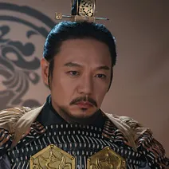

의자왕
배우 1973년생
의자왕의 아들 부여융
배우 1974년생
실제 1살차이인데 아들이라고 우김
부여융 맡은 배우가 노안이고
의자왕 맡은 배우가 동안이라 더 거슬림

의자왕
배우 1973년생
의자왕의 아들 부여융
배우 1974년생
실제 1살차이인데 아들이라고 우김
부여융 맡은 배우가 노안이고
의자왕 맡은 배우가 동안이라 더 거슬림
옛날사람들은 지금보다 노안이잖아 고증임
전원일기도 최불암씨와 김용건씨 나이 차이가 7살
?????? 그건 또 몰랐네 그냥 형님동생 정도 차이였구나
수양아들인듯?
장혁 말투가 진짜 30년간 똑같아서 그만좀 나왔으면 좋겠다
많이 없앤다고 노력했는데 주기적으로 추노가보임, 역시 연개소문은 최민수..
무게감 하나도 없고 발성 이상한데
유튭 댓글에 극찬 밖에 없어서 당황스럽더라...
대길이가 워낙 GOAT였지
대길이가 장군된거임?
나도 아들이라길래 좀 놀랐음
삭았을수도있지 ㅠㅠㅠㅠ
ㅋㅋㅋㅋㅋㅋㅋㅋㅋㅋㅋㅋ
나도 이거 보면서 얼탱이가 없던데
대조영 연남건 ㅋㅋㅋㅋ
걍 대사가 병신임 고거전은 중반까진 재밌었는데 존나실망
그 나라가 우덜 나라인가? 느그들 부여씨나라제
3년전에 왕이 왕자들 41명 죄~다 좌평으로 임명해분 뒤로는 우덜나라는 없어져부럿제~
아들이 현봉식 배우였으면.....
아들래미 거란에서 이민왔나보네
의자왕 배우 조곤조곤 말하는데 카리스마가 인상 깊었음
아하